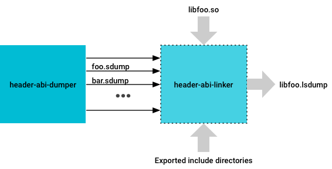
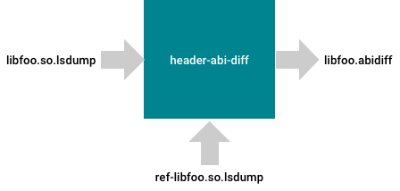

Application Binary Interface (ABI) stability is a prerequisite of framework-only updates because vendor modules may depend on the Vendor Native Development Kit (VNDK) shared libraries that reside in the system partition. Newly-built VNDK shared libraries must be ABI-compatible to previously released VNDK shared libraries so vendor modules can work with those libraries without recompilation and without runtime errors.
To help ensure ABI compatibility, Android 9 includes a header ABI checker, as described in the following sections.
About VNDK and ABI compliance
The VNDK is a restrictive set of libraries that vendor modules may link to and which enable framework-only updates. ABI compliance refers to the ability of a newer version of a shared library to work as expected with a module that is dynamically linked to it (i.e. works as an older version of the library would).
About exported symbols
An exported symbol (also known as a global symbol) refers to a symbol that satisfies all of the following:
- Exported by the public headers of a shared library.
- Appears in the
.dynsymtable of the.sofile corresponding to the shared library. - Has WEAK or GLOBAL binding.
- Visibility is DEFAULT or PROTECTED.
- Section index is not UNDEFINED.
- Type is either FUNC or OBJECT.
The public headers of a shared library are defined as the headers
available to other libraries/binaries through the
export_include_dirs, export_header_lib_headers,
export_static_lib_headers,
export_shared_lib_headers, and
export_generated_headers attributes in Android.bp
definitions of the module corresponding to the shared library.
About reachable types
A reachable type is any C/C++ built-in or user-defined type that is
reachable directly or indirectly through an exported symbol AND exported
through public headers. For example, libfoo.so has function
Foo, which is an exported symbol found in the
.dynsym table. The libfoo.so library includes the
following:
| foo_exported.h | foo.private.h |
|---|---|
typedef struct foo_private foo_private_t;
typedef struct foo {
int m1;
int *m2;
foo_private_t *mPfoo;
} foo_t;
typedef struct bar {
foo_t mfoo;
} bar_t;
bool Foo(int id, bar_t *bar_ptr);
|
typedef struct foo_private {
int m1;
float mbar;
} foo_private_t;
|
| Android.bp |
|---|
cc_library {
name : libfoo,
vendor_available: true,
vndk {
enabled : true,
}
srcs : ["src/*.cpp"],
export_include_dirs : [
"include"
],
}
|
| .dynsym table | |||||||
|---|---|---|---|---|---|---|---|
Num
|
Value
|
Size
|
Type
|
Bind
|
Vis
|
Ndx
|
Name
|
1
|
0
|
0
|
FUNC
|
GLOB
|
DEF
|
UND
|
dlerror@libc
|
2
|
1ce0
|
20
|
FUNC
|
GLOB
|
DEF
|
12
|
Foo
|
Looking at Foo, direct/indirect reachable types include:
| Type | Description |
|---|---|
bool
|
Return type of Foo.
|
int
|
Type of first Foo parameter.
|
bar_t *
|
Type of second Foo parameter. By way of bar_t *,
bar_t is exported through foo_exported.h.
bar_t contains a member mfoo, of type
foo_t, which is exported through foo_exported.h,
which results in more types being exported:
However, foo_private_t is NOT reachable because it is not
exported through foo_exported.h. (foot_private_t *
is opaque, therefore changes made to foo_private_t are allowed.)
|
A similar explanation can be given for types reachable through base class specifiers and template parameters as well.
Ensuring ABI compliance
ABI compliance must be ensured for the libraries marked
vendor_available: true and vndk.enabled: true in the
corresponding Android.bp files. For example:
cc_library {
name: "libvndk_example",
vendor_available: true,
vndk: {
enabled: true,
}
}
For data types reachable directly or indirectly by an exported function, the following changes to a library are classified as ABI-breaking:
| Data type | Description |
|---|---|
| Structures and Classes |
|
| Unions |
|
| Enumerations |
|
| Global Symbols |
|
* Both public and private member functions must not be changed or removed because public inline functions can refer to private member functions. Symbol references to private member functions can be kept in caller binaries. Changing or removing private member functions from shared libraries can result in backward-incompatible binaries.
** The offsets to public or private data members must not be changed because inline functions can refer to these data members in their function body. Changing data member offsets can result in backward-incompatible binaries.
*** While these don't change the memory layout of the type, there are semantic differences that could lead to libraries not functioning as expected.
Using ABI compliance tools
When a VNDK library is built, the library's ABI is compared with the corresponding ABI reference for the version of the VNDK being built. Reference ABI dumps are located in:
${ANDROID_BUILD_TOP}/prebuilts/abi-dumps/(v)ndk/<${PLATFORM_VNDK_VERSION}>/<BINDER_BITNESS>/<ARCH_ARCH-VARIANT>/source-based
For example, on building libfoo for API level 27 of the VNDK,
libfoo's inferred ABI is compared with its reference at:
${ANDROID_BUILD_TOP}/prebuilts/abi-dumps/(v)ndk/27/64/<ARCH_ARCH-VARIANT>/source-based/libfoo.so.lsdump
ABI breakage error
On ABI breakages, the build log displays warnings with the warning type and a
path to the abi-diff report. For example, if libbinder's ABI has
an incompatible change, the build system throws an error with a message
similar to the following:
***************************************************** error: VNDK library: libbinder.so's ABI has INCOMPATIBLE CHANGES Please check compatibility report at: out/soong/.intermediates/frameworks/native/libs/binder/libbinder/android_arm64_armv8-a_cortex-a73_vendor_shared/libbinder.so.abidiff ****************************************************** ---- Please update abi references by running platform/development/vndk/tools/header-checker/utils/create_reference_dumps.py -l libbinder ----
Building VNDK library ABI checks
When a VNDK library is built:
header-abi-dumperprocesses the source files compiled to build the VNDK library (the library's own source files as well as source files inherited through static transitive dependencies), to produce.sdumpfiles that correspond to each source.
Figure 1. Creating the .sdumpfilesheader-abi-linkerthen processes the.sdumpfiles (using either a version script provided to it or the.sofile corresponding to the shared library) to produce a.lsdumpfile that logs all of the ABI information corresponding to the shared library.
Figure 2. Creating the .lsdumpfileheader-abi-diffcompares the.lsdumpfile with a reference.lsdumpfile to produce a diff report that outlines the differences in the ABIs of the two libraries.
Figure 3. Creating the diff report
header-abi-dumper
The header-abi-dumper tool parses a C/C++ source file and dumps
the ABI inferred from that source file into an intermediate file. The build
system runs header-abi-dumper on all compiled source files while
also building a library that includes the source files from transitive
dependencies.
Currently .sdump files are formatted as
Protobuf
TextFormatted, which is not guaranteed to be stable across future
releases. As such, .sdump file formatting should be considered a
build system implementation detail.
For example, libfoo.so has the following source file
foo.cpp:
#include <stdio.h>
#include <foo_exported.h>
bool Foo(int id, bar_t *bar_ptr) {
if (id > 0 && bar_ptr->mfoo.m1 > 0) {
return true;
}
return false;
}
You can use header-abi-dumper to generate an intermediate
.sdump file that represents the ABI presented by the source file
using:
$ header-abi-dumper foo.cpp -I exported -o foo.sdump -- -x c++
This command tells header-abi-dumper to parse
foo.cpp and emit the ABI information that is exposed in the
public headers in the exported directory. This is an excerpt
(not a complete representation) from foo.sdump
generated by header-abi-dumper:
record_types {
type_info {
name: "foo"
size: 12
alignment: 4
referenced_type: "type-1"
source_file: "foo/include/foo_exported.h"
linker_set_key: "foo"
self_type: "type-1"
}
fields {
referenced_type: "type-2"
field_offset: 0
field_name: "m1"
access: public_access
}
fields {
referenced_type: "type-3"
field_offset: 32
field_name: "m2"
access: public_access
}
fields {
referenced_type: "type-5"
field_offset: 64
field_name: "mPfoo"
access: public_access
}
access: public_access
record_kind: struct_kind
tag_info {
unique_id: "_ZTS3foo"
}
}
record_types {
type_info {
name: "bar"
size: 12
alignment: 4
referenced_type: "type-6"
…
pointer_types {
type_info {
name: "bar *"
size: 4
alignment: 4
referenced_type: "type-6"
source_file: "foo/include/foo_exported.h"
linker_set_key: "bar *"
self_type: "type-8"
}
}
builtin_types {
type_info {
name: "int"
size: 4
alignment: 4
referenced_type: "type-2"
source_file: ""
linker_set_key: "int"
self_type: "type-2"
}
is_unsigned: false
is_integral: true
}
functions {
return_type: "type-7"
function_name: "Foo"
source_file: "foo/include/foo_exported.h"
parameters {
referenced_type: "type-2"
default_arg: false
}
parameters {
referenced_type: "type-8"
default_arg: false
}
linker_set_key: "_Z3FooiP3bar"
access: public_access
}
foo.sdump contains ABI information exposed by the source file
foo.cpp, e.g.:
record_types. Refer to structs, unions, or classes exposed by the public headers. Each record type has information about its fields, its size, access specifier, the header file it was exposed in, etc.pointer_types. Refer to pointer types directly/indirectly referenced by records/functions exposed by public headers, along with the type the pointer points to (via thereferenced_typefield intype_info). Similar information is logged in the.sdumpfile for qualified types, built-in C/C++ types, array types, and lvalue and rvalue reference types (such logging information about types allows for recursive diffing).functions. Represent functions exposed by public headers. They also have information about the function's mangled name, the return type, the types of the parameters, the access specifier, etc.
header-abi-linker
The header-abi-linker tool takes the intermediate files produced
by header-abi-dumper as input then links those files:
| Inputs |
|
|---|---|
| Output | A file that logs the ABI of a shared library (e.g.
libfoo.so.lsdump represents libfoo's ABI).
|
The tool merges the types graphs in all the intermediate files given to it,
taking into account one-definition (user-defined types in different
translation units with the same fully qualified name, might be semantically
different) differences across translation units. The tool then parses either
a version script or the .dynsym table of the shared library
(.so file) to make a list of the exported symbols.
For example, when libfoo adds the bar.cpp file
(which exposes a C function bar) to its compilation,
header-abi-linker could be invoked to create the complete
linked ABI dump of libfoo as follows:
header-abi-linker -I exported foo.sdump bar.sdump \
-o libfoo.so.lsdump \
-so libfoo.so \
-arch arm64 -api current
Example command output in libfoo.so.lsdump:
record_types {
type_info {
name: "foo"
size: 24
alignment: 8
referenced_type: "type-1"
source_file: "foo/include/foo_exported.h"
linker_set_key: "foo"
self_type: "type-1"
}
fields {
referenced_type: "type-2"
field_offset: 0
field_name: "m1"
access: public_access
}
fields {
referenced_type: "type-3"
field_offset: 64
field_name: "m2"
access: public_access
}
fields {
referenced_type: "type-4"
field_offset: 128
field_name: "mPfoo"
access: public_access
}
access: public_access
record_kind: struct_kind
tag_info {
unique_id: "_ZTS3foo"
}
}
record_types {
type_info {
name: "bar"
size: 24
alignment: 8
...
builtin_types {
type_info {
name: "void"
size: 0
alignment: 0
referenced_type: "type-6"
source_file: ""
linker_set_key: "void"
self_type: "type-6"
}
is_unsigned: false
is_integral: false
}
functions {
return_type: "type-19"
function_name: "Foo"
source_file: "foo/include/foo_exported.h"
parameters {
referenced_type: "type-2"
default_arg: false
}
parameters {
referenced_type: "type-20"
default_arg: false
}
linker_set_key: "_Z3FooiP3bar"
access: public_access
}
functions {
return_type: "type-6"
function_name: "FooBad"
source_file: "foo/include/foo_exported_bad.h"
parameters {
referenced_type: "type-2"
default_arg: false
}
parameters {
referenced_type: "type-7"
default_arg: false
}
linker_set_key: "_Z6FooBadiP3foo"
access: public_access
}
elf_functions {
name: "_Z3FooiP3bar"
}
elf_functions {
name: "_Z6FooBadiP3foo"
}
The header-abi-linker tool:
- Links the
.sdumpfiles provided to it (foo.sdumpandbar.sdump), filtering out the ABI information not present in the headers residing in the directory:exported. - Parses
libfoo.so, and collects information about the symbols exported by the library through its.dynsymtable. - Adds
_Z3FooiP3barandBar.
libfoo.so.lsdump is the final generated ABI dump of
libfoo.so.
header-abi-diff
The header-abi-diff tool compares two .lsdump files
representing the ABI of two libraries and produces a diff report stating the
differences between the two ABIs.
| Inputs |
|
|---|---|
| Output | A diff report stating the differences in the ABIs offered by the two shared libraries compared. |
The ABI diff file is designed to be as verbose and readable as possible. The
format is subject to change in future releases. For example, you have two
versions of libfoo: libfoo_old.so and
libfoo_new.so. In libfoo_new.so, in
bar_t, you change the type of mfoo from
foo_t to foo_t *. Since bar_t is a
directly reachable type, this should be flagged as an ABI breaking change by
header-abi-diff.
To run header-abi-diff:
header-abi-diff -old libfoo_old.so.lsdump \
-new libfoo_new.so.lsdump \
-arch arm64 \
-o libfoo.so.abidiff \
-lib libfoo
Example command output in libfoo.so.abidiff:
lib_name: "libfoo"
arch: "arm64"
record_type_diffs {
name: "bar"
type_stack: "Foo-> bar *->bar "
type_info_diff {
old_type_info {
size: 24
alignment: 8
}
new_type_info {
size: 8
alignment: 8
}
}
fields_diff {
old_field {
referenced_type: "foo"
field_offset: 0
field_name: "mfoo"
access: public_access
}
new_field {
referenced_type: "foo *"
field_offset: 0
field_name: "mfoo"
access: public_access
}
}
}
The libfoo.so.abidiff contains a report of all ABI breaking
changes in libfoo. The record_type_diffs message
indicates a record has changed and lists the incompatible changes, which
include:
- The size of the record changing from
24bytes to8bytes. - The field type of
mfoochanging fromfootofoo *(all typedefs are stripped off).
The type_stack field indicates how header-abi-diff
reached the type that changed (bar). This field may be
interpreted as Foo is an exported function that takes in
bar * as parameter, that points to bar, which was
exported and changed.
Enforcing ABI/API
To enforce the ABI/API of VNDK and LLNDK shared libraries, ABI references must
be checked into ${ANDROID_BUILD_TOP}/prebuilts/abi-dumps/(v)ndk/.
To create these references, run the following command:
${ANDROID_BUILD_TOP}/development/vndk/tools/header-checker/utils/create_reference_dumps.py
After creating the references, any change made to the source code that results in an incompatible ABI/API change in a VNDK or LLNDK library now results in a build error.
To update ABI references for specific VNDK core libraries, run the following command:
${ANDROID_BUILD_TOP}/development/vndk/tools/header-checker/utils/create_reference_dumps.py -l <lib1> -l <lib2>
For example, to update libbinder ABI references, run:
${ANDROID_BUILD_TOP}/development/vndk/tools/header-checker/utils/create_reference_dumps.py -l libbinder
To update ABI references for specific LLNDK libraries, run the following command:
${ANDROID_BUILD_TOP}/development/vndk/tools/header-checker/utils/create_reference_dumps.py -l <lib1> -l <lib2> --llndk
For example, to update libm ABI references, run:
${ANDROID_BUILD_TOP}/development/vndk/tools/header-checker/utils/create_reference_dumps.py -l libm --llndk